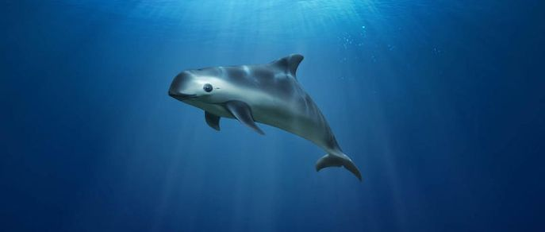
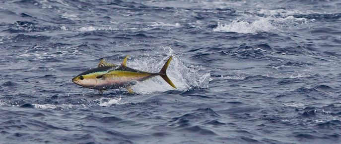
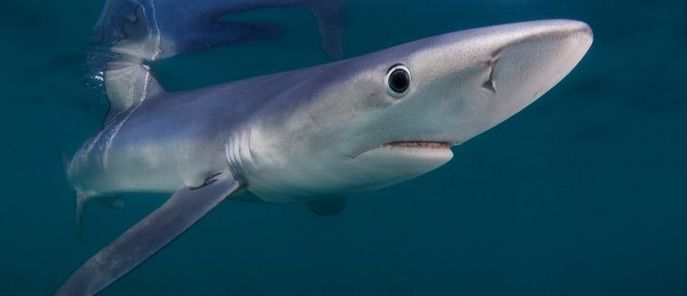

Gefährdete Meerestiere
Überfischung, Verschmutzung und Unterwasserlärm – die Ökosysteme der Meere sind stark bedroht. Diese acht Tiere leiden besonders unter der industriellen Nutzung und der rücksichtslosen Ausbeutung:
1. Vaquita
Ihr Name bedeutet im Spanischen „Kleine Kuh“ und sie gehören zu den Schweinswalen...
2. Gelbflossen-Thunfisch
Dieserweit wandernde Fisch kommt vor allem im Pazifik, Atlantik und Indischen Ozean vor...
3. Blauhai
Lange bevor die ersten Saurier aus ihren Eiern schlüpften, zogen bereits Haie durch die Meere...